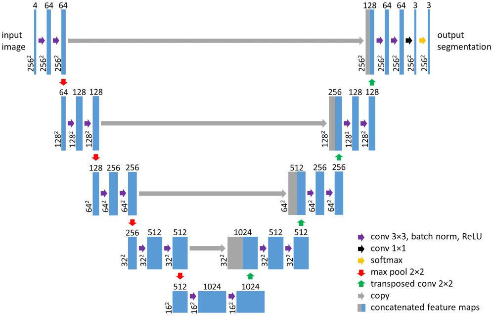
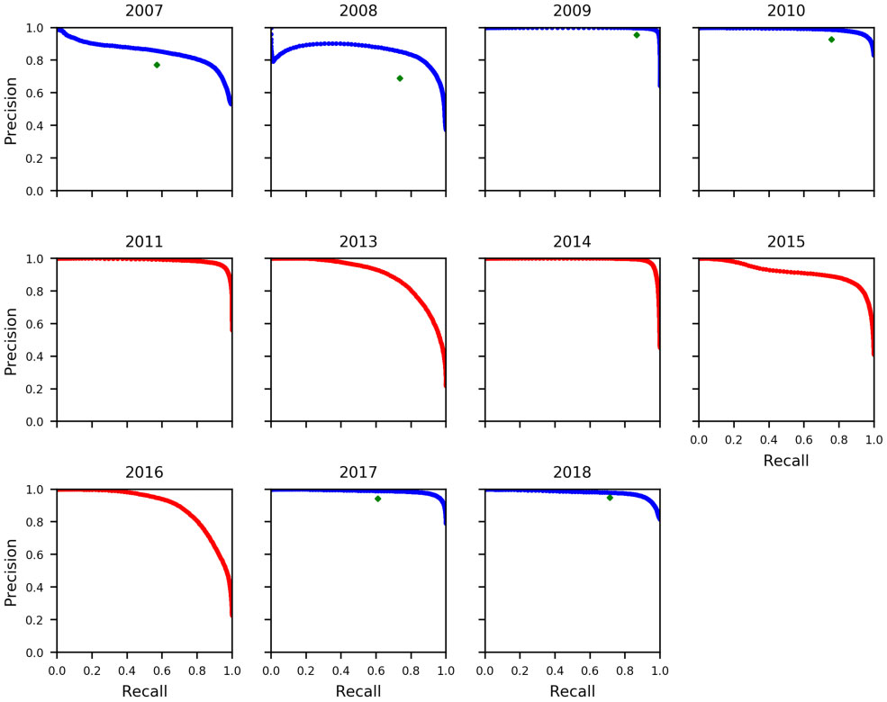
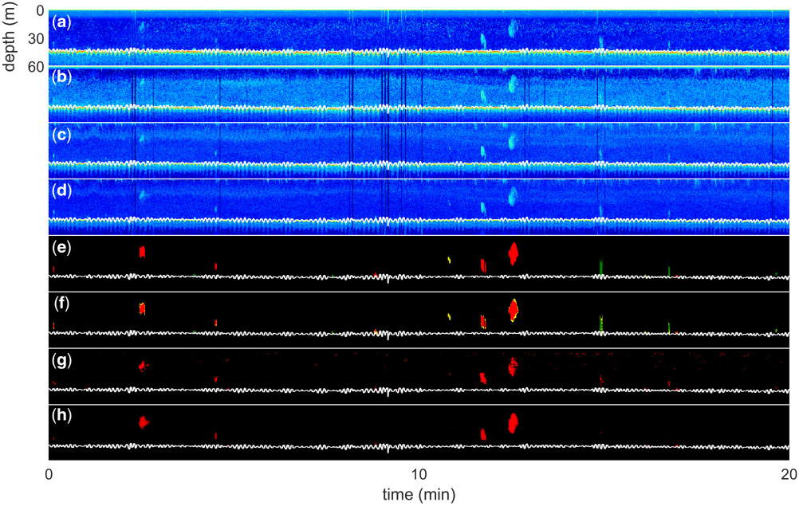
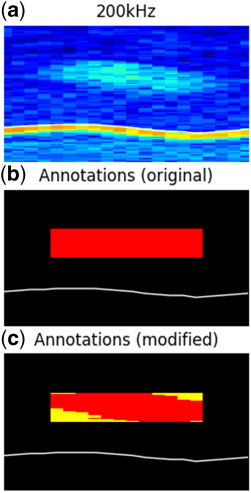
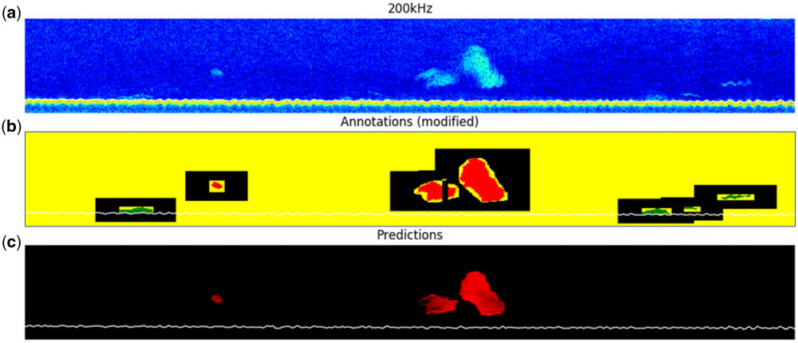
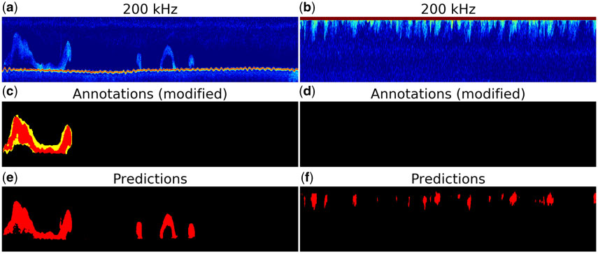

Acoustic classification in multifrequency echosounder data using deep convolutional neural networks

| Architecture Type | Modified U-Net (Encoder-Decoder with Skip Connections) |
|---|---|
| Key Innovation | End-to-end automatic feature learning from multifrequency (18, 38, 120, 200 kHz) echograms. |
| Performance Metric | F1 score of 0.87 (overall) and 0.94 (sandeel vs. other schools). |
| Computational Efficiency | Pixel-wise segmentation allowing for variable input sizes and efficient processing of large survey datasets. |
| Venue | ICES Journal of Marine Science |
| Year | 2020 |
| Citations | 51 |
| DOI | Link |
This paper introduces a deep learning strategy for automated acoustic target classification in multifrequency echosounder data using a convolutional neural network (CNN) based on the U-Net architecture. By learning spatial and frequency features directly from raw data, the method addresses the limitations of manual species identification and predefined feature extraction in acoustic trawl surveys. Tested on over a decade of Norwegian sandeel survey data, the model achieved an F1 score of 0.87 in distinguishing sandeel schools from other species and background, significantly outperforming traditional school classification algorithms.
Multifrequency Acoustic Data Preprocessing
Acoustic trawl surveys utilize echosounders to record backscattered soundwaves, which are essential for estimating fish abundance. In this study, data from four standard frequencies (18, 38, 120, and 200 kHz) were collected during the Norwegian sandeel surveys between 2007 and 2018. To ensure consistency across different vessel settings, the data were interpolated into a common time-range grid based on the 200-kHz resolution.
This preprocessing transforms the volume backscattering coefficient (sv) values into a four-channel 'image,' where each pixel represents a specific depth and time coordinate across the four frequencies. Missing pings were detected and filled with zero-intensity values (mapped to -75 dB) to maintain the temporal integrity of the echograms.
The resulting dataset allows the convolutional neural network to treat multifrequency echosounder data similarly to a multispectral image, enabling the simultaneous analysis of frequency response and morphological features of fish schools. Figure 1 shows how these channels are combined.
U-Net Architecture for Echosounder Segmentation

The researchers employed a modified U-Net architecture, a type of fully convolutional network (FCN) consisting of an encoder and a decoder. The encoder path maps the input image to a low-resolution representation, capturing high-level abstract features, while the decoder path recovers the spatial resolution to produce a pixel-wise classification map.
A defining feature of the U-Net is the use of skip connections between corresponding layers of the encoder and decoder. These connections allow the network to pass high-resolution spatial information directly to the decoding stages, which is critical for the precise localization of small or irregularly shaped fish schools within the water column. Figure 4 illustrates the overall architecture.
Contrary to the original U-Net, batch normalization layers were inserted between each convolutional layer and its activation function. This modification helps stabilize the training process by reducing internal covariate shift, leading to faster convergence and better generalization on unseen survey data.
Balanced Sampling and Handling Class Imbalance
A major challenge in training deep learning models for acoustic surveys is the extreme class imbalance; in the sandeel dataset, approximately 99.8% of pixels were classified as background, with only 0.1% each for sandeel and other fish species. To address this, the study implemented a balanced sampling strategy during training.
Random 256x256 pixel crops were drawn from the echograms with specific probabilities to ensure the network was exposed to enough instances of fish schools and the seabed. This prevented the model from defaulting to a 'background-only' prediction and helped it learn the specific features of rare classes.
Additionally, a weighted cross-entropy loss function was used, assigning higher penalties to misclassifications of sandeel and other fish species compared to background pixels. This further incentivized the network to prioritize the accurate identification of fish schools over the dominant background class.
Performance and Comparison with Traditional Methods

The performance of the U-Net model was evaluated against a traditional automated processing pipeline (the Korona pipeline in LSSS). The U-Net achieved an overall F1 score of 0.87 on the test set, while the benchmark method obtained a significantly lower F1 score of 0.77.
Specifically, the network demonstrated high accuracy in separating sandeel schools from schools of other species, achieving an F1 score of 0.94. This indicates that the deep learning approach successfully captured the distinct multifrequency signatures and morphological differences between species. Figure 6 shows the precision-recall curves across different years.
The results show that the automated deep learning strategy is more robust than traditional threshold-based school detection algorithms, particularly in complex environments where fish schools are located close to the seabed or among other biological noise.
Concept Breakdown
A symmetrical neural network architecture where the encoder compresses input data into abstract features and the decoder reconstructs it into a high-resolution classification map.
Connections that relay low-level spatial features from the encoder to the decoder, ensuring that fine details lost during compression are preserved for accurate pixel-wise labeling.
The process of aligning acoustic data from multiple frequencies onto a single coordinate grid, allowing them to be processed as multiple channels of a single image.
A variant of the standard loss function that adjusts for class imbalance by assigning different importance to errors based on the frequency of the class in the training data.
A binary image processing operation used to fill small gaps in manual annotations, creating more continuous and accurate training labels for the fish schools.
Mathematics
F1 Score
| Symbol | Meaning |
|---|---|
| $\text{precision}$ | Proportion of predicted positives that are correct |
| $\text{recall}$ | Proportion of actual positives that are correctly identified |
Weighted Cross-Entropy Loss
| Symbol | Meaning |
|---|---|
| $w_c$ | Weight assigned to class c |
| $y_c$ | True label for class c (one-hot encoded) |
| $\hat{y}_c$ | Predicted probability for class c |
Area-Backscattering Coefficient
| Symbol | Meaning |
|---|---|
| $s_a$ | Area-backscattering coefficient |
| $s_v$ | Volume backscattering coefficient |
| $dz$ | Change in depth |
Figures and Explanations
Comparison of four frequency echograms (18, 38, 120, 200 kHz) alongside manual annotations and model predictions, demonstrating the network's effectiveness in segmenting sandeel schools.

Illustration of how manual bounding box annotations are refined using intensity thresholds and morphological operations to create high-quality training labels.

The modified U-Net architecture diagram, showing the input of 4x256x256 crops, the contracting encoder path, the bottleneck with 1024 features, and the expanding decoder path with skip connections.

Precision-recall curves for sandeel classification across different survey years, showing the consistency of the model's performance on various datasets.
